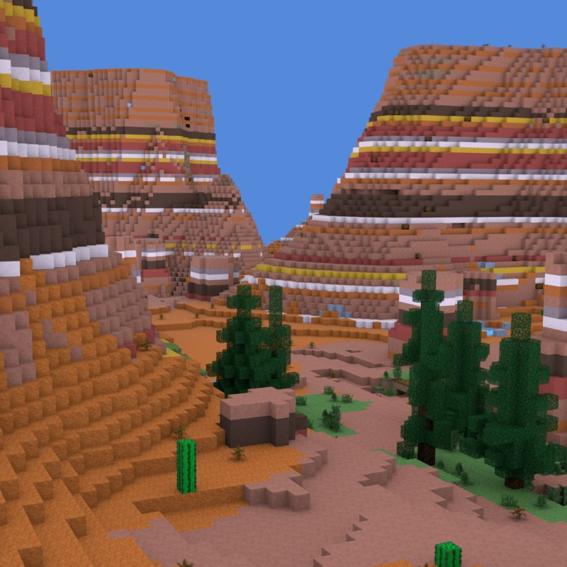
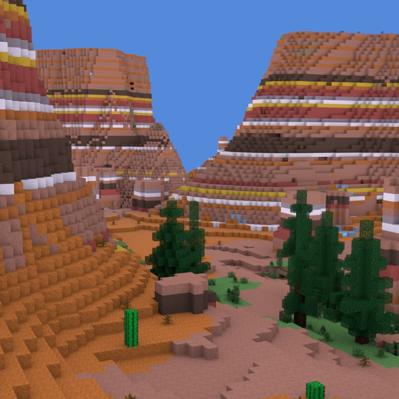
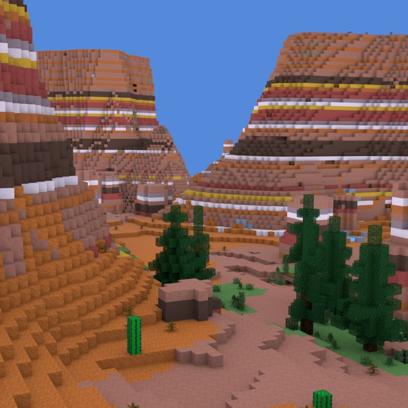

My name is Tobias André, I am 17 years old (turning 18 7th of July).
I know Norwegian and English, and a little bit German.
I live in Sørneset with my dad, stepmother, and little brother. I live in Emblem with my mom, stepfather, and little brother.
I do Taekwon-do and I game some minecraft for the most part in my freetime, when im not at school or work. I work at Chess Frisør Byen.
